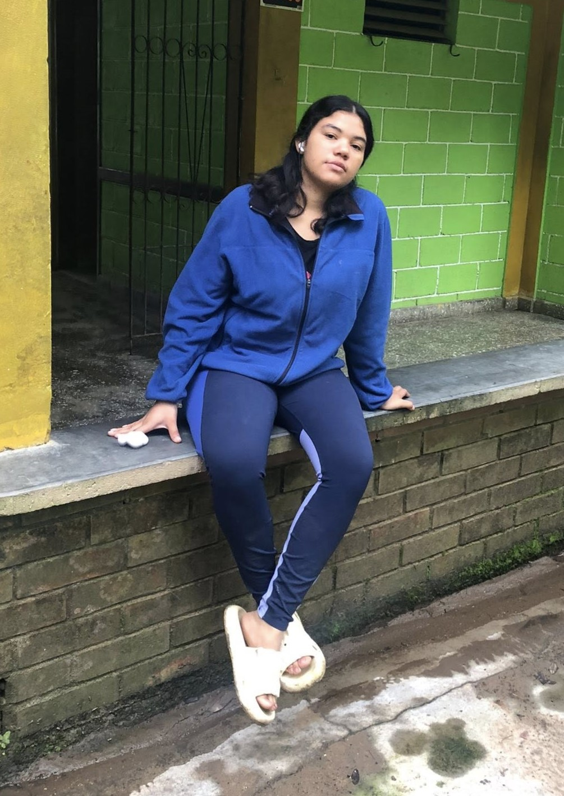

Bienvenido a mi historia
Esta es una introducción a la historia de mi vida, un recorrido por mis vivencias, mis metas y mis sueños para el futuro.

Esta es una introducción a la historia de mi vida, un recorrido por mis vivencias, mis metas y mis sueños para el futuro.